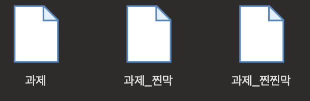
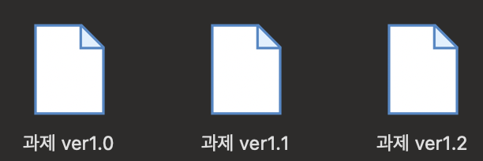
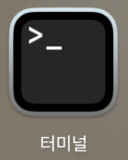
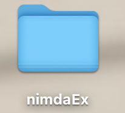

Git이란?
깃에 대해서 배우기 전에 왜 깃을 배워야 하는지 의문이 생길 것이다.
아마 대학교 새내기 때 과제를 하면서 파일을 아래처럼 정리해 본 경험이 한 번쯤은 있을 것이다.

좀 학년이 올라가면 아래처럼 진화한다.

혼자 개발하는 거면 어떻게 저장하든 상관없는데
만약 코드 하나를 가지고 여러 명에서 협업을 한다면?
저렇게 소스코드를 하나하나 저장해서 카톡으로 주고받을 수도 있겠지만
만약 코드가 10기가가 넘는다면?
그리고 특정 프로그래머가 코드 수정을 끝마치기 전까지 다른 프로그래머는 그냥 기다려야 된다.
또 만약 나는 열심히 코드를 짰는데
다른 팀원이 짠 코드랑 구조가 아예 달라져버린다면?
처음부터 코드를 다시 짜야 된다.
그래서 이런 개발자의 고충을 덜어주기 위해 버전관리툴 (VCS)라는 게 등장한다.
수십 년간 수많은 버전관리툴이 등장했다.
그중에 살아남은 가장 유명한 버전관리툴이 Git이다.
여하튼 협업을 하려면
Git은 반드시 배워야 한다.... 정도만 이해하고 넘어가고
궁금하면 구글링으로 따로 더 찾아보면 좋을 것 같다.
Terminal이란?
Unix 기반 명령어를 사용할 수 있도록 도와주는 쉘 환경.
우리가 평소에 익숙한 마우스 클릭으로 프로그램을 실행하는 방식을 GUI (Graphic User Interface) 방식이라고 하며,
텍스트 기반으로 컴퓨터와 상호작용하는 방식을 CLI (Command Line Interface) 방식이라고 한다.
그러면 편하게 GUI로 코딩을 하면 되지 왜 불편하게 CLI를 사용해야 할까?
우리가 앞으로 사용할 Git이라는 버전관리툴이 CLI를 기반으로 동작하기 때문이다.
따라서 Git 버전관리툴을 사용하기 위해서는 컴퓨터와 텍스트를 기반으로 상호작용하기 위해서는
기초적인 터미널 명령어에 대한 이해가 필요하다.
잠시 터미널에서 사용되는 기초 유닉스 명령어를 살펴보기 전에
우선 Git부터 설치해야 한다.
근데 하나하나 다 설명해 주기엔 너무 시간이 오래 걸려서 다음 블로그 보고 깃을 설치하도록 하자.
https://junesker.tistory.com/95
[Github] Git 설치하기 / Git 설치방법 / Git 다운로드
'Git은 빠르고 효율적으러 작은 프로젝트부터 대규모 프로젝트까지 모든 것을 처리하도록 설계된 무료 오픈 소스 분산형 버전 제어 시스템이다. Git은 배우기 쉽고 매우 작은 면적과 번개처럼 빠
junesker.tistory.com
Mac OS - Terminal, Window OS - 명령프롬프트
각 운영체제에 맞게 터미널을 실행시켜 보자.
(윈도우의 경우 아래와 같이 따라가면 명령프롬프트를 실행시킬 수 있다.
윈도우 + S → cmd 입력 → Enter)

시작하기 전에 깃이 잘 깔려있는지 확인해 보자.
다음 명령어를 따라 쳐보면
git --version
이렇게 버전이 출력되는데 그러면 잘 깔린 거다.
이제 본격적으로 리눅스 명령어를 배워보자.
git version 2.47.0
pwd (print working directory)
pwd는 현재 프로그래머가 위치한 경로를 출력하는 명령어다.
여기서 directory라는 단어가 생소할 수 있는데,
윈도우 운영체제에서 폴더를 유닉스 운영체제에서는 디렉토리(Directory) 라고 칭한다.
터미널에서 pwd를 입력해 보자.
pwd/Users/choedoil
현재 /Users/choedoil 이라는 경로에 위치하고 있다는 의미이다.
ls (list)
ls는 현재 경로에 위치한 디렉터리 혹은 파일 목록을 출력해 주는 명령어다.
(앞으로 계속 폴더 대신 디렉토리라는 용어를 사용할 예정이니 잘 숙지하도록 하자)
ls...
Anaconda3-2024.02-1-MacOSX-arm64.sh
Applications
Applications (Parallels)
CLionProjects
Desktop
Documents
...
하지만 이렇게 출력하면 해당 항목들이 파일인지 디렉토리인지 구분이 불가능하다.
따라서 우측에 -l 옵션을 주면 항목들의 세부적인 정보를 출력할 수 있다.
ls -l
전과 다르게 이상한 영어가 추가됐는데
이렇게 명령어 옆에 -로 붙이는 것을 옵션(Option)이라고 한다.
옵션을 붙이면 명령어 기능을 추가할 수 있다.
맨 앞의 글자만 확인하면 된다.
가장 앞에 있는 심볼이 "-"로 시작하면 파일이라는 뜻이며,
"d"로 시작하면 디렉토리라는 의미다.
ls -l...
-rw-r--r--@ 1 xxx staff 736841 4 11 2024 기타db.pptx
-rw-r--r--@ 1 xxx staff 3778490 4 12 2024 자바수업2주차.pptx
drwx------@ 36 xxx staff 1152 5 2 15:58 Desktop
drwx------+ 34 xxx staff 1088 4 25 14:01 Documents
drwx------+ 152 xxx staff 4864 5 2 15:22 Downloads
...
이제 어떤 항목이 디렉토리인지 확인했으니
원하는 디렉토리로 들어가 새로운 폴더를 생성해 보도록 하자.
cd (change Directory)
cd 명령어는 특정 디렉토리로 이동하는 명령어이다.
윈도우에서 그냥 폴더를 더블클릭하는 동작을 CLI 명령으로 바꾼 거라고 이해하면 된다.
cd 뒤에 이동할 디렉토리 명을 명시하면 되는데
나는 Desktop (바탕화면)으로 이동하고 싶으니 cd Desktop이라는 명령어를 커맨드 라인에 입력한 뒤,
ls명령어를 사용해 바탕화면에 있는 폴더를 출력해 보았다.
cd Desktop
ls...
$RECYCLE.BIN
9주차 강의자료
GitTest
Icon?
Myls.dmg
Resource
...
mkdir (make directory)
다음으로 디렉토리를 생성해 보자.
바탕화면에서 "마우스로 우클릭하고 새로운 폴더 만들기"의 CLI 버전이다.
(이제 대충 뭐 하는지는 알 것 같아서 이런 식의 설명은 생략하도록 하겠다.)
cd 명령어와 마찬가지로 mkdir 뒤에 생성할 디렉토리명을 적어주면 된다.
나는 nimdaEx라는 이름으로 디렉토리를 생성했다.
mkdir nimdaEx
그다음 cd 명령어를 사용해 nimdaEx 디렉터리로 이동한다.
cd nimdaEx
git init
이제 nimdaEx 디렉토리로 이동했으니
해당 디렉토리를 git이 추적할 수 있도록 설정해야 한다.
git init 명령어를 사용하면 현재 위치한 디렉토리는 이제 git이 관리하게된다.
git init/Users/xxx/Desktop/nimdaEx/.git/ 안의 빈 깃 저장소를 다시 초기화했습니다
ls -a
다음으로 앞서 배운 ls 명령어에서 다른 옵션을 써보도록 하자.
-a 옵션인데 해당 옵션은 디렉토리 내부의 숨긴 파일까지 모두 보여주는 명령이다.
그냥 다 보여주면 되지 왜 파일을 숨기냐고 의문이 들 수 있는데,
그냥....중요한건 숨겨둔다고 생각하고 넘어가자
. .. .git
명령어를 입력해 보면.... git 이렇게 3개가 출력될 것이다.
. 은 현재 디렉토리 경로를 저장하는 파일이며
.. 은 현재 디렉토리의 상위 디렉토리 경로를 저장하는 파일이다.
왜 경로를 저장해두어야 하는지 궁금할 텐데
생각해 보면 당연하다.
우리는 GUI 환경처럼 마우스클릭으로 폴더를 넘나들수 없기 때문에
저렇게 디렉토리마다 경로를 저장해 두는 것이다.
그래서 cd .. 하면 상위 디렉토리로 이동한다.
마지막으로. git 이게 중요한데
해당 디렉토리를 깃이 관리할 수 있도록 해주는 파일이다.
여튼 .git이 보인다면 잘 따라온 거다.
그냥 뭐 어렵게 생각할 것 없이 지금 과정을 요약하자면
바탕화면에서 우클릭해서 nimdaEx 폴더 만들고
더블클릭해서 해당 폴더로 들어간 거다.

왜 굳이 이런 짓을 해야 하냐면...
앞에서도 말했듯이 Git을 사용하기 위해선 커맨드에서 폴더를 만들고,
이동하고 생성하는 방법에 대해서 알아야 하기 때문이다.
지금까지 정말 깃을 사용하기 위한 최소한의 명령어만을 배워봤다.
우리가 리눅스를 공부하는 게 아니니까 더 자세하고 세부적인 내용은 리눅스마스터 2급이나 LPIC 자격증을 준비하면서 공부해도 좋고
궁금하다면 따로 알아서 찾아보도록 하자.
다음에는 대면으로 깃 기초하고
깃허브 사용법에 대해서 수업할 예정이니까
다른 건 몰라도 정말 아래 명령어만큼은
정말 정말 기초적인 명령어니까
꼭 숙지하도록 하자
pwd
cd
ls
ls -l
ls -a
mkdir
cd ..
git init